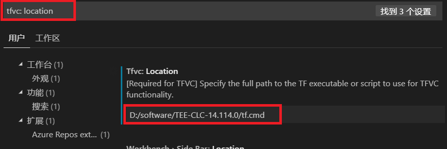
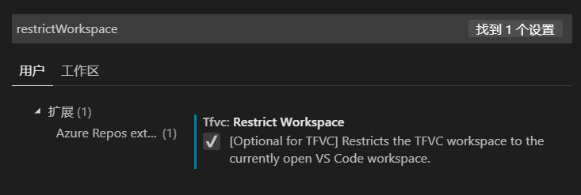
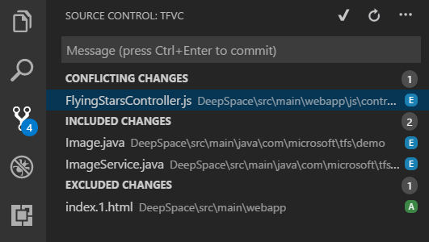
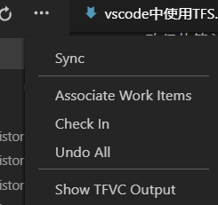
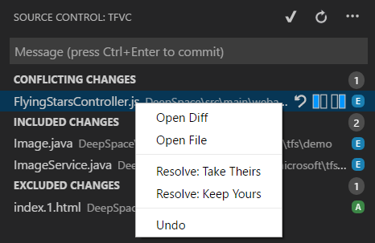

VSCode中使用TFS版本管理工具
介绍
TFS全称Team Foundation Server，是一种为 Microsoft 产品提供 源代码管理、 数据收集、 报告和项目跟踪，而为协作 软件开发 的项目。 可作为独立的软件，或 Visual Studio Team System (VSTS) 在服务器端后端平台。大型的IDE例如Visio Studio IDE、Eclipse或JetBrains IDE（例如，Android Studio，IntelliJ）等，都集成了TFS控件。对于前码农来说，目前最流行VSCode编辑器，则需要安装微软的官方插件，并进行一系列的配置，下面记录一下配置过程。
环境
- VSCode 1.34.0
步骤
安装插件
插件搜索TFS的结果中会有几条第三方的插件，我们这里使用的时官方推荐的 Azure Repos 扩展插件。官方介绍：
此扩展允许您连接到
Azure DevOps Services和Team Foundation Server，并为Team Foundation版本控制（TFVC）提供支持。它允许您监视构建并管理TFVC或Git源存储库的pull请求和工作项。该扩展使用您的本地存储库信息连接到Azure DevOps Services或Team Foundation Server 2015 Update 2（及更高版本）。
安装完毕后，左下角会出现一个 Team 标识。
TFVC命令行客户端
VSCode中需要依赖TF命令客户端，才能提供TFVC支持。如果没有TF命令客户端，TFVC将无法正常工作。下面分两种况：1、安装了 Visio Studio IDE（windows）；2、Eclipse，JetBrains IDE（Windows，macOS，Linux）
安装了 Visio Studio IDE（windows）
通过典型的Visual Studio安装，可以在Program Files (x86)文件夹下找到Windows版本的TFVC命令行客户端（tf.exe）。它通常会放置在类似的位置 C:\Program Files (x86)\Microsoft Visual Studio 14.0\Common7\IDE\TF.exe。在2017版本的Visual Studio社区中，可以在类似的位置找到它C:\Program Files (x86)\Microsoft Visual Studio\2017\Community\Common7\IDE\CommonExtensions\Microsoft\TeamFoundation\Team Explorer\TF.exe
Eclipse，JetBrains IDE（Windows，macOS，Linux）
需要下载Team Explorer Everywhere命令行客户端（TEE CLC），下载地址TEE-CLC-14.114.0.zip。下载完成后解压都某个文件夹内。
win + R 输入cmd打开终端，进入到刚刚解压的TEE CLC目录中，执行命令 tf eula接受TEE最终用户许可协议, 在此之前要确认正确安装JDK,正确配置了Java环境。
配置TFVC支持
文件>首选项>设置，打开设置页面搜索 tfvc: localtion 如下设置：

如果是使用的 VS IDE的tf.exe命令行客户端，则把地址配置为tf.exe即可。
将状态更改限制为当前VS代码工作区
默认情况下，TFVC支持显示整个映射工作空间的状态，而不管您在Visual Studio代码中打开的文件夹。如果您只想查看当前打开的VS Code工作区的更改状态，可以通过在Visual Studio代码设置（文件>首选项>设置）中勾选以下设置：

Team Foundation版本控制
打开本地存储库文件夹
打开本地的存储库根目录或者子目录文件夹，扩展程序检测到存储库后，提示登录。点击左下角的 Team标识或 点击 F1 输入 team 选择 team: singin 输入用户名和密码，连接TFS服务器
登录成功后的状态栏
- 第一个是存储库所属的团队项目的名称。单击该项将打开浏览器到团队网站。
- 第二个状态栏项显示此特定存储库和分支的构建状态。将鼠标悬停在项目上将提供有关引用哪个构建（如果有）的其他信息。单击该项将带您进入浏览器中该版本的摘要页面。该指标每5分钟更新一次
- 第三个状态栏项显示固定工作项查询返回的项目数。如果尚未配置固定查询，则默认为分配给您的工作项。单击该项将显示查询返回的工作项。该指标每5分钟更新一次
- 单击第四个状态栏项可快速发送有关Azure Repos扩展的反馈
命令
除状态栏集成外，该扩展还提供了几个用于与Azure DevOps Services和Team Foundation Server进行交互的命令。在Command Palette（F1）中，键入team并选择一个命令。
team associate work items- 提示您选择分配给您的工作项（或自定义查询的结果）。选择工作项会将其添加到当前的提交/签入消息中。team create bug- 将浏览器打开到用于创建新错误的网页。如果在Visual Studio代码中突出显示单行文本，则它将用作错误的标题。该错误将分配给您。然后，您可以选择更新字段，保存，取消等。team create pull request- 仅限Git根据当前存储库和分支打开浏览器以获取新的拉取请求。在创建拉取请求之前，请确保在运行命令之前保存，提交和推送您所做的任何更改。这样做可确保您的所有最新更改都是拉取请求的一部分。team create task- 将浏览器打开到用于创建新任务的网页。如果在Visual Studio代码中突出显示单行文本，则它将用作任务的标题。任务将分配给您。然后，您可以选择更新字段，保存，取消等team create work item- 提示您从团队项目中可用的列表中选择工作项类型。进行选择后，浏览器将打开用于创建工作项的网页。如果在Visual Studio代码中突出显示单行f文本，则它将用作任务的标题。工作项目将分配给您。然后，您可以选择更新字段，保存，取消等。team send feedback- 提示你发微笑或皱眉。选择后，您可以向我们提供最多1000个字符的反馈。（可选）提供您的电子邮件地址，以便我们在您需要时联系。如果您不想提供您的电子邮件地址，请将其留空（我们仍会收到您的反馈）。注意： 即使禁用遥测报告，也可以发送反馈。team signin- 使用此命令登录Azure DevOps Services组织或Team Foundation Server 2015 Update 2（及更高版本）服务器。提供凭据后，它们将安全地存储在您的计算机上。保存的凭据将用于该组织，直到它们被team signout命令删除或被后续team signin命令覆盖。有关更多详细信息，请参阅下面的“Secure Credential Storage”主题。team signout- 使用此命令从Azure DevOps Services组织或Team Foundation Server 2015 Update 2（及更高版本）服务器注销。注销将从您的本地计算机中删除您的凭据。要重新登录，您需要team signin再次运行该命令。team view blame- 仅限Git如果在编辑器中打开了存储库中的文件，它将打开浏览器到服务器存储库中当前分支中该文件的blame页面。team view build summary- 与单击“生成状态”状态栏项相同的行为。team view history- 如果在编辑器中打开存储库中的文件，它将打开浏览器到服务器存储库中当前分支中该文件的历史记录页面。否则，将打开服务器存储库中当前分支的历史记录。此命令支持TFVC存储库。team view pull requests- Git only与单击Pull Requests状态栏项相同的行为。team view website- 与单击团队项目状态栏项相同的行为。team view work items- 提示您选择分配给您的工作项，按ChangedDate降序排序。选择工作项将在浏览器中打开它。此命令将返回最多200个结果，并带有“浏览其他工作项…”选项。选择该选项将打开浏览器以显示查询的所有结果。team view work item queries- 提示您选择存储在团队项目的“我的查询”文件夹中的查询。选择查询将运行它并在“快速选择”列表中显示结果。选择其中一个结果将在浏览器中打开该工作项。此命令将返回最多200个结果，并带有“浏览其他工作项…”选项。选择该选项将打开浏览器以显示查询的所有结果。
TFVC源代码控制视图
Team Foundation版本控制Viewlet

它显示任何冲突更改的列表（要在下次签入之前解决），包含的更改（要包括在下次签入中的更改），排除的更改（保留更改但从签入中排除）。该Viewlet还提供了右键单击上下文菜单，以允许其他功能，如撤消，包含和排除。
签入和刷新
Check In- 此check mark按钮用于检入您的更改。系统不会提示您输入注释，因此请确保在单击之前提供注释。Refresh- 此circular arrow按钮运行TFVC Status命令并处理结果
菜单

Sync- 此选项运行Get命令并处理任何冲突或错误, 同步代码。Associate Work Items- 要将工作项关联到您的签到，请选择此选项。将显示分配给您（或从您的自定义查询返回）的工作项列表供您选择。选择一个会将其添加到您的签到评论中。Check In- 使用此选项签入您的更改。Undo All- 如果有文件修改，此命令将提示确认，然后撤消所有更改。Show TFVC Output- 使用此选项可显示显示TFVC Output在此会话期间运行的TFVC命令的窗口。
解决冲突

Open Diff- 打开修改后的文件和版本化文件之间的差异视图。Open File- 在编辑器中打开修改后的文件。Resolve: Take Theirs- 解决冲突Take Theirs。Resolve: Keep Yours- 解决冲突Keep Yours。Undo- 恢复对文件所做的更改。
注意：扩展中不支持解决分支之间的冲突。此时，这些冲突最好在IDE或命令行中解决。
参考
https://github.com/microsoft/azure-repos-vscode
https://github.com/microsoft/azure-repos-vscode/blob/master/TFVC_README.md